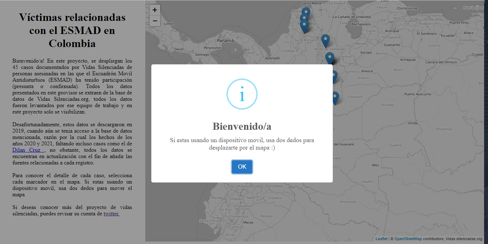

1- Geovisor victimas relacionadas con el Esmad en Colombia
Este visor representa espacialmente información obtenida de la base de datos de vidas silenciadas. En
el, se detallan personas
que han muerto en hechos en los cuales el Escuadrón móvil Antidisturbios (ESMAD) de Colombia se ha visto
involucrado (o incluso ha sido
condenado directamente, como en el caso de
Nicolas Neira).
- Técnologías usadas:
- React JS
- Css
- JavaScript
- Leaflet
Este visor se encuentra disponible en este enlace, y también se puede obtener una vista previa en esta pagina.

2- Geovisor tracker vacunación contra COVID19 en el mundo.
Este geovisor presenta la actualización en tiempo real de los datos de vacunación contra COVID19 en el
mundo. Haciendo uso de una
API externa que sigue las actualizaciones de información oficial de vacunación de distintos países.
Siempre estará disponible el último dato publicado de manera oficial, por lo que es una herramienta
potente para hacer
seguimiento a la lucha contra el COVID19
- Técnologías usadas:
- Html5
- Css
- JavaScript
- Leaflet
Este visor se encuentra disponible en este enlace, y también se puede obtener una vista previa en esta pagina.

3- Geovisor con datos obtenidos mediante web scraping en Twitter
Para este trabajo se tomaron datos de la red social Twitter, especificamente del perfil de vidas
silenciadas, quienes
son una organización que registra desapariciones en las que algún actor estatal esta -presuntamente-
inmerso. Los datos
se obtuvieron mediante una técnica llamada web scrapping, la cual se trata de descargar datos por
cantidades en varias
páginas web. La red social Twitter permite de manera legal realizar este procedimiento, por lo que,
mediante el uso
python y la API de twitter se obtuvieron alrededor de 5.000 datos de tweets que contienen información de
personas desaparecidas,
todas publicadas por el portal vidas silenciadas.
Posteriormente, estos datos son analizados y depurados mediante el uso de la libreria pandas de Python,
y trabajados
espacialmente mediante el uso de la libreria geopandas. Para este caso, se uso un condicional que "lee"
el tweet, extrae
el lugar basandose en la coincidencia de nombre con un archivo shapefile de ESRI. De esta manera se
asignan coordenadas a cada
tweet basandose en su contenido (strings) y así posteriormente generar un archivo shapefile.
Por último, este shapefile final es convertido a un formato GeoJson, el cual permite la carga de datos
de una manera más
eficiente en el despliegue web de datos geográficos. Haciendo uso de HTML, CSS y un poco de JavaScript,
se genera un
geovisor que despliega los más de 2500 registros finales.
- Técnologías usadas:
- Python
- Html5
- Css
- JavaScript
- Leaflet
Este visor se encuentra disponible en este enlace, y también se puede obtener una vista previa en esta pagina.

4- Dashboard ancho de andenes Bogotá
Este producto realizado a lo largo del año 2020, junto con un colega geógrafo, producto que muestra el
dinamisno de las
diferentes representaciones cartográficas, así como su evolución hacia representaciones más dinámicas y
versátiles.
Para este caso, se incluye el despliegue de una gran cantidad de información, en un tablero de control-
dashboard
- desarrollado con la suite de Esri. En este tablero se despliega la totalidad de andenes de Bogotá
clasificados por la medida
del ancho de cada uno de ellos, puesto que, dada la necesidad de distanciamiento físico persistente por el
COVID 19, es necesario
considerar si existe la capacidad en la ciudad para garantizar un distanciamiento efectivo.
- Técnologías usadas:
- Arcgis Pro

- Arcgis Dashboards

Este tablero se puede consultar en el siguiente enlace
Adicionalmente, acá puedes observar una vista previa: